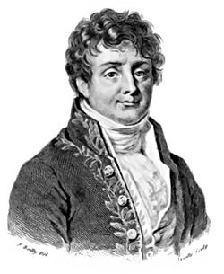

Sistemas de comunicacion
Un sistema de comunicaciones es un conjunto de dispositivos que son utilizados con la finalidad de
transmitir, emitir y recibir señales de todo tipo, como voz, datos, audio, video, etc., además dichas
señales pueden ser del tipo digital o analógica.
Un sistema de comunicaciones puede describirse fácilmente mediante tres elementos
básicos; un transmisor, el cual se encarga de generar la señal que se desea y acoplarla de tal forma
que pueda viajar a través del canal, mediante procedimientos como modulación, filtrado,
codificación, etc.; un medio de transmisión, el cual será el canal mediante el cual la señal va a
viajar, y puede ser desde fibras ópticas, cables coaxiales, hasta el mismo aire; y finalmente un
receptor, que realiza el procedimiento inverso del transmisor con la finalidad de reconstruir la señal
y que esta sea lo mas parecida a la original.
1.1 Impacto de Telecomunicaciones
La comunicación, es el proceso de transmisión y recepción de ideas, información y mensajes. En los últimos 150 años, y en especial en las dos últimas décadas, la reducción de los tiempos de transmisión de la información a distancia y de acceso a la información es uno de los retos esenciales de nuestra sociedad.
Internet ha revolucionado los medios de comunicación, implantando nuevos medios informativos. La utilización de recursos multimedia, ha obligado a generar un nuevo paradigma sobre estos medios. Ejemplo de esto son, la radio por Internet, periódicos en línea, televisión digital, revistas y boletines digitales.
Los primeros sistemas telegráficos y telefónicos utilizaban el cable como soporte físico para la transmisión de los mensajes, pero las investigaciones científicas indicaban que podían existir otras posibilidades. La teoría de la naturaleza electromagnética de la luz fue enunciada por el físico británico James Clerk Maxwell en 1873, en su Tratado de la Electricidad y el Magnetismo. Las teorías de Maxwell fueron corroboradas por el físico alemán Heinrich Hertz. En 1887 Hertz descubrió las ondas electromagnéticas, estableciendo la base técnica para la telegrafía sin hilos.
Algunos expertos le llaman simplemente las tecnologías de la información y la comunicación (TIC) y otros le han antepuesto el término de nuevas (NTIC). Su utilización ha provocado modificaciones en nuestras categorías de tiempo y de espacio y ha obligado a redefinir incluso el concepto de realidad, a partir de la posibilidad de construir realidades. “Cuando hablamos de NTIC no nos estamos refiriendo a un solo tipo de tecnología.
En estos momentos disponemos de, al menos, tres tipos diferentes, cada vez más articulados entre sí, pero que utilizan procesos y establecen relaciones muy distintas entre los contenidos y los usuarios: la televisión, el ordenador y el teléfono.”
1.2 Componentes
Es evidente que los campos de actividad, para las telecomunicaciones, son innumerables e incluso podríamos decir, sin ningún riesgo a equivocarnos, que no existe campo en donde las tecnologías que nos ocupan no sean determinantes en la actividad. Esto representa, sin duda, mayor implantación de tecnologías. Las telecomunicaciones significan, para la empresa, comunicación, actualización y, en definitiva, progreso. La empresa se enfrenta al reto de satisfacer y agilizar las soluciones internas, dentro de la propia empresa y satisfacer y agilizar las soluciones externas, con sus clientes y proveedores, dentro de unas nuevas propuestas de comunicación y servicios. Comienzan pues a sucederse la aparición de tecnologías que propicien la solución a las necesidades, internas y externas, mencionadas. No se trata de implementar la mejor tecnología, sino la más adecuada para los intereses de la aplicación, para solucionar las necesidades existentes.
Los elementos que integran un sistema de comunicación son:
Emisor
Receptor
Lenguaje o protocolos de transmisión
Mensaje
Canal o Medio
Emisor
El emisor es uno de los conceptos de la comunicación, de la teoría de la comunicación y del proceso de información. En sí técnicamente, el emisor es aquel objeto que codifica el mensaje y lo transmite por medio de un canal o medio hasta un receptor, perceptor y/u observador. En sentido más estricto, el emisor es aquella fuente que genera mensajes de interés o que reproduce una base de datos de la manera más fiel posible sea en el espacio o en tiempo. La fuente puede ser el mismo actor de los eventos o sus testigos. Una agencia que se encarga de reunir noticias puede ser llamada fuente, así como cualquier base de datos que sea considerada fiable y creíble.
Un emisor puede ser tanto un aparato - una antena por ejemplo - o un emisor humano - un locutor por ejemplo. La palabra "emisora" deriva de emisor, es decir, que emite por medio de las ondas hertzianas.
En correo emisor también hace referencia a la persona u organización que expide una carta y cuya dirección viene indicada en el sobre de la carta.
En economía, un emisor puede ser, por ejemplo, el banco sistema de elementos.
En educación un emisor es toda aquella persona o cosa que transmita los conocimientos al educando, por ejemplo el maestro.
Receptor
El receptor, en un sistema de telecomunicación, es el agente (persona o equipo) que recibe el mensaje (señal o código) emitido por un emisor, transmisor o enunciante. Es el destinatario a quien va dirigida la comunicación. El proceso que lleva a cabo el receptor es lo contrario al del emisor, este descifra e interpreta los signos elegidos por el emisor, es decir: realiza la decodificación del mensaje para entender la información que se transfiere.
Medios
Con el término medio de comunicación (del latín medĭum, pl. medĭa), se hace referencia al instrumento o forma de contenido por el cual se realiza el proceso de la comunicación y telecomunicación. Usualmente se utiliza el término para hacer referencia a los medios de comunicación masivos (MCM, medios de comunicación de masas o masas media); sin embargo, otros medios de comunicación, no son masivos sino interpersonales. Cuando hablamos de medios de comunicación podemos describir a muchos: la imprenta, radio, telégrafo, televisión, internet, teléfonos, etc.
Los medios de comunicación son instrumentos en constante evolución, van desarrollándose de la mano con los avances de la tecnología. Muy probablemente la primera forma de comunicarse entre humanos fue la de los signos y señales empleados en la prehistoria, cuyo reflejo en la cultura material son las distintas manifestaciones del arte prehistórico. La aparición de la escritura se toma como un gran inicio de la historia de la comunicación. A partir de ese momento, los cambios económicos y sociales fueron impulsando el nacimiento y desarrollo de distintos medios de comunicación, desde los vinculados a la escritura y su mecanización (imprenta -siglo XV-) hasta los medios audiovisuales ligados a la era de la electricidad (primera mitad del siglo XX) y a la revolución de la informática y las telecomunicaciones (revolución científico-técnica o tercera revolución industrial -desde la segunda mitad del siglo XX-), cada uno de ellos esenciales para las distintas fases del denominado proceso de globalización.
Debemos tener en consideración que los papales de receptor y emisor cambian, ya que el que envío por primera vez el mensaje (emisor) puede ser a su vez el receptor, cuando este le devuelve el mensaje y entonces el receptor se vuelve emisor, y el medio sigue siendo el mismo.
Las funciones de cada uno (receptor y emisor) cambian dependiendo quien escribe y quien lee, también pueden existir varios receptores, un claro ejemplo es cuando estamos en el Messenger, ahí la conversación se da entre varias personas, porque al momento de que tu eres emisor escribes en la sala y varios están leyéndote (son varios receptores).
Codigos
Los códigos de línea son frecuentemente usados para el transporte digital de datos. Estos códigos consisten en representar la señal digital transportada respecto a su amplitud respecto al tiempo. La señal está perfectamente sincronizada gracias a las propiedades específicas de la capa física. La representación de la onda se suele realizar mediante un número determinado de impulsos. Estos impulsos representan los unos y los ceros digitales. Los tipos más comunes de codificación en línea son el unipolar, polar, bipolar y Manchester.
Después de la codificación en línea, la señal se manda a través de la capa física. A veces las características de dos canales aparentemente muy diferentes son lo suficientemente parecidos para que el mismo código sea usado por ellos.
Protocolos
En el campo de las telecomunicaciones, un protocolo de comunicaciones es el conjunto de reglas normalizadas para la representación, señalización, autenticación y detección de errores necesario para enviar información a través de un canal de comunicación, permiten el flujo de información dentro del proceso comunicativo. Un ejemplo de un protocolo de comunicaciones simple adaptado a la comunicación por voz es el caso de un locutor de radio hablando a sus radioyentes.
Los protocolos de comunicación para la comunicación digital por redes de computadoras tienen características destinadas a asegurar un intercambio de datos fiable a través de un canal de comunicación imperfecto. Los protocolos de comunicación siguen ciertas reglas para que el sistema funcione apropiadamente.
Campos de uso de códigos de línea
La señal en línea codificada puede tener las siguientes utilidades en diversos campos:
Puede ser puesta directamente en una transmisión de línea, en forma de variaciones de voltaje o corriente.
Está lo bastante modulada para crear una señal de radiofrecuencia que puede ser mandada libre en el espacio
Puede ser usada para encender y apagar una luz en redes inalámbricas ópticas, más conocidas como infrarrojos.
Puede convertirse en campos magnéticos en un disco duro.
Puede ser impresa para crear códigos de barras.
1.3 Señales y su clasificacion
Una señal es un signo, un gesto, una acción u otra cosa que tienecomo finalidad informar o avisar algo, las señales sustituyen en granparte a la palabra escrita o al lenguaje, ya que estas son un poco másfáciles de entender
Así mismo una señal puede ser también una variación de una señaleléctrica u otra magnitud física que se utiliza para transmitirinformación
Señal Analogica
Una señal de la vida analógica es aquella en la que el valor de tensión o voltaje es proporcional (o semejante) al valor de la información que representa. Una señal analógica aporta un valor independiente para cada instante de tiempo. Por contra, una señal digital sólo modifica su valor cada cierta cantidad constante de tiempo, a un ritmo determinado por lo que se denomina velocidad de muestreo. Así, con las señales analógicas se puede determinar el valor del fenómeno que las generó en cualquier instante de tiempo. Las señales digitales en cambio solo representan el valor del fenómeno que las generó cada cierta cantidad de tiempo. Una señal analógica puede ser continua o alterna. Será continua cuando su valor de tensión nunca cambie de polaridad (o positivo o negativo). Será alterna cuando el valor de la tensión cambie de polaridad, por ejemplo en una onda sinusoidal, cuya forma se repite con el tiempo y que va incrementando su valor con signo eléctrico positivo (+) durante medio ciclo y disminuyéndolo a continuación con signo eléctrico negativo (–) en el medio ciclo siguiente.
Digitales
La señal digital es un tipo de señal generada por algún tipo de fenómeno electromagnético en que cada signo que codifica el contenido de la misma puede ser analizado en término de algunas magnitudes que representan valores discretos, en lugar de valores dentro de un cierto rango. Por ejemplo, el interruptor de la luz sólo puede tomar dos valores o estados: abierto o cerrado, o la misma lámpara: encendida o apagada.
Los sistemas digitales, como por ejemplo el ordenador, usan lógica de dos estados representados por dos niveles de tensión eléctrica, uno alto, H y otro bajo, L (de High y Low, respectivamente, en inglés).
Referido a un aparato o instrumento de medida, se dice que el aparato es digital cuando el resultado de la medida se representa en un visualizador mediante números (dígitos) en lugar de hacerlo mediante la posición de una aguja, o cualquier otro indicador, en una escala.
Electricos
Una señal eléctrica es un tipo de señal generada por algún fenómeno electromagnético. Estas señales pueden ser analógicas, si varían de forma continua en el tiempo, o digitales si varían de forma discreta (con valores dados como 0 y 1). Entenderemos por señal eléctrica a una magnitud eléctrica cuyo valoro intensidad depende del tiempo. Así, v(t) es una tensión cuya amplitud depende del tiempo e i(t) es una corriente cuya intensidad depende del tiempo.
Opticos
La comunicación óptica es cualquier forma de comunicación que utiliza la luz como medio de transmisión. Un sistema óptico de comunicación consiste de un transmisor que codifica el mensaje dentro de una señal óptica, un canal, que transporta la señal a su destino, y un receptor, que reproduce el mensaje desde la señal óptica recibida.
Hay muchas formas de comunicaciones ópticas no tecnológicas, incluyendo el lenguaje corporal y el lenguaje de señas. Técnicas como el telégrafo óptico, las banderas de señales, señales de humo y hogueras fueron las primeras formas de comunicación óptica tecnológicas.
La fibra óptica es el medio moderno más común para la comunicación óptica digital. Los sistemas de comunicación óptica de espacio libre también son utilizados en una gran variedad de aplicaciones.
1.4 Analisis Matematicos de señales
Analisis Forier

El análisis de Fourier debe su nombre a Jean Baptist Joseph Fourier (1768-1830), un matemático y físico francés. Si bien muchas personas contribuyeron a su
desarrollo, Fourier es reconocido por sus descubrimientos matemáticos y su visión en el uso práctico de las técnicas. Su interés se centraba en la propagación de calor, presentando en 1807 un trabajo en el Instituto Francés sobre el uso de funciones senoidales para representar distribuciones de temperatura.
El análisis de Fourier es elemental para entender el comportamiento de las señales de sistemas. Este es el resultado de que los senosoidales son eigenfunciones de sistemas lineales variantes en el tiempo (LTI). Si pasamos cualquier senosoidal a través de un sistema LTI, obtenemos la versión escalada de cualquier sistema senosoidal como salida.
Entonces, ya que el análisis de Fourier nos permite redefinir las señales en términos de senosoidales, todo lo que tenemos que hacer es determinar el efecto que cualquier sistema tiene en todos los senosoidales posibles (su función de transferencia) así tendremos un entendimiento completo del sistema.
Así mismo, ya que podemos definir el paso de los senosoidales en el sistema como la multiplicación de ese senosoidal por la función de transferencia en la misma frecuencia, puedes convertir el paso de la señal a través de cualquier sistema de ser una convolución (en tiempo) a una multiplicación (en frecuencia) estas ideas son lo que dan el poder al análisis de Fourier.